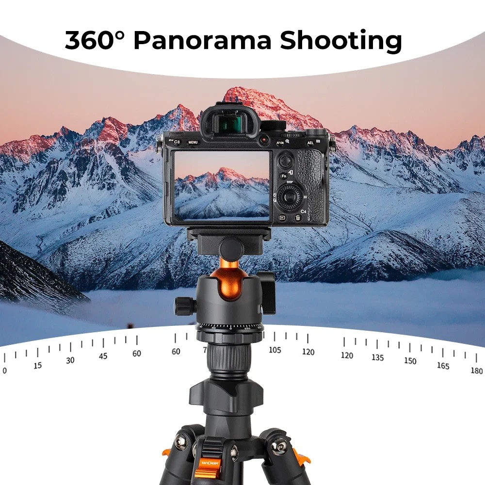
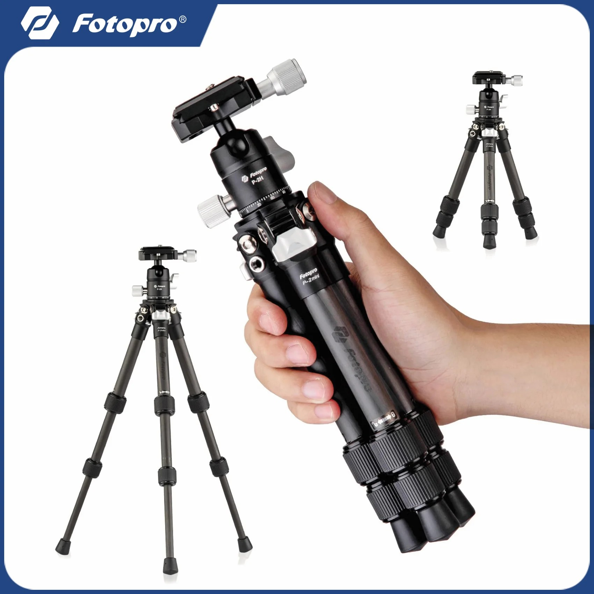
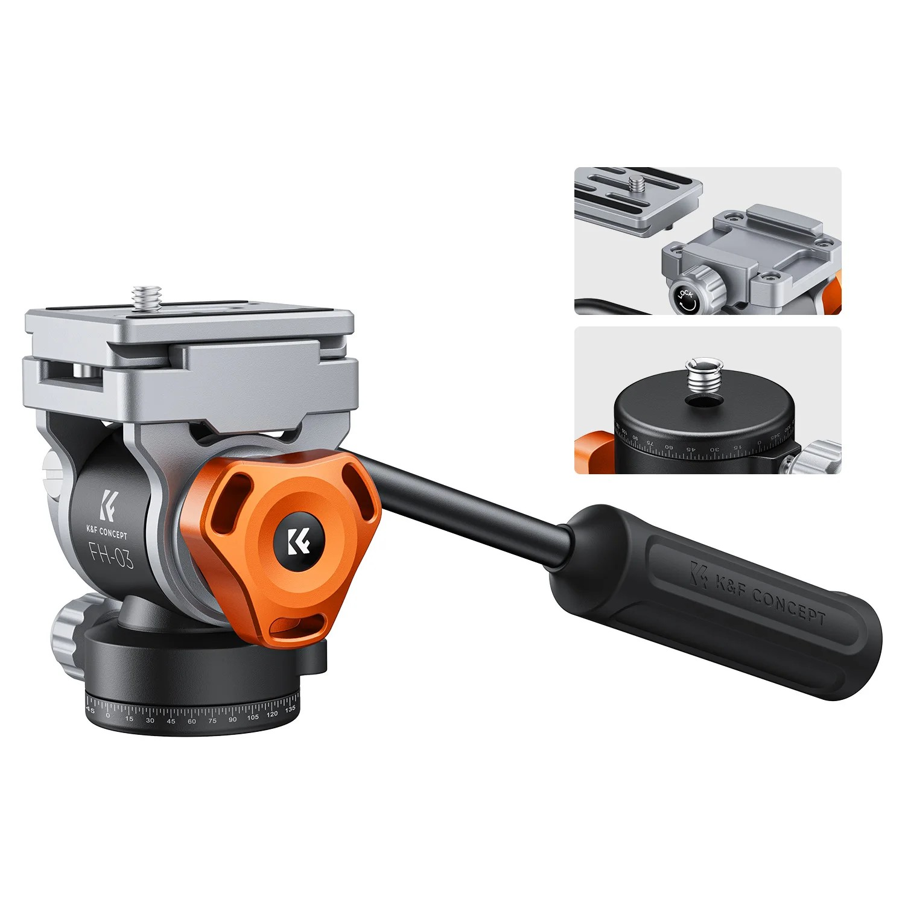

איך בוחרים חצובה
לטיולים ולשטח
6 דברים לבדוק לפני שקונים · קרבון או אלומיניום?
לטלפון

אלומיניום
קרבון לטיולים
ראש וידאוהמדריך המלא ב-myripo.comצילום מאהבה ❤️
6 דברים לבדוק לפני שקונים · קרבון או אלומיניום?

אלומיניום
קרבון לטיולים
ראש וידאו